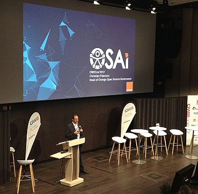
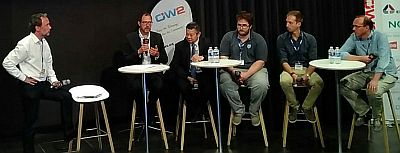
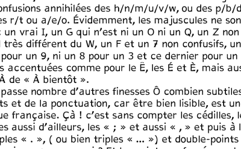
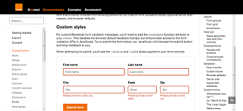

Christian Paterson presenting OSAi (picture courtesy of Groupe de travail Logiciel Libre)

Accessibility round table (picture courtesy of Daniele Gagliardi) — Left to right: Stéphane Deschamps (Orange), Christian Paterson (Orange), Antoine Cao (DINSIC), Aurélien Levy (Temesis), Alessandro Portosa (Engineering Group), David Monnehay (Atalan)

Accessible DfA font example: unmistakeable characters

Boosted: documenting elements and how best to make them accessible